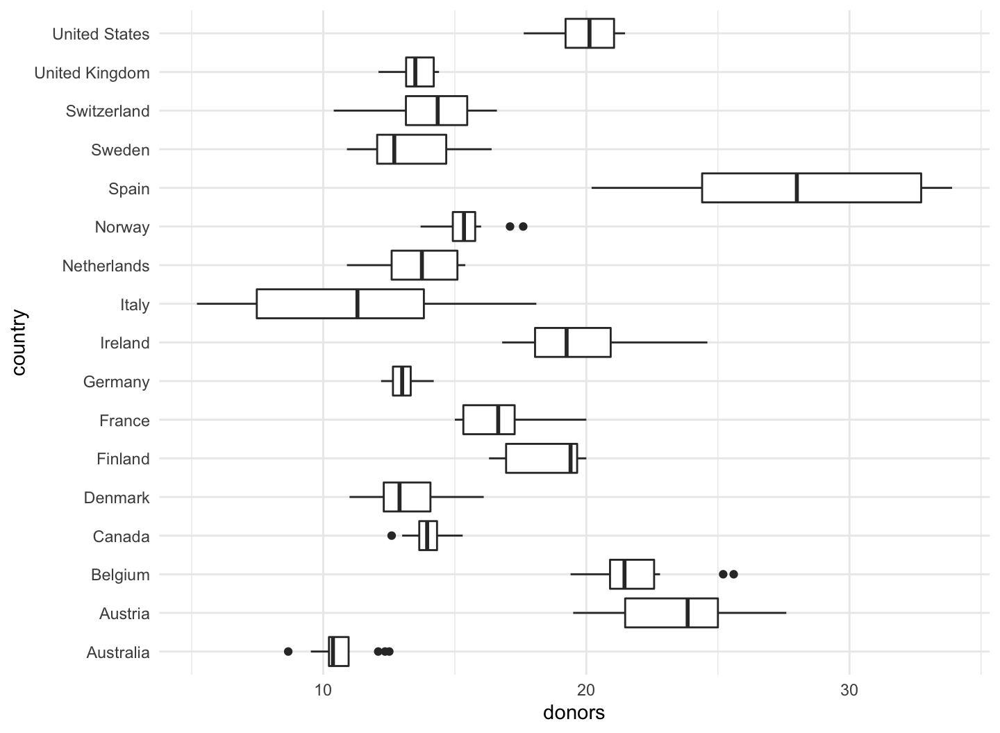

February 17, 2022
Graph tables, add labels, make notes
Graph tables, add labels, make notes
We will learn about how to transform data before we send it to ggplot to be turned into a figure.
We will expand the number of geoms we know about, and learn more about how to choose between them.
- How to reorder the variables displayed in our figures;
- How to subset the data we use before we display it.
We will learn a little more about the scale, guide, and theme functions.
Loading the R packages
library(tidyverse) library(skimr) # a better summary of data frame library(scales) # scales for ggplot library(gapminder) # gapminder data library(socviz) # data for visualization practice library(ggrepel) # for text on plot, geom_text_repel(), geom_label_repel()
The 2016 General Social Survey data
- The
socvizpackage includes thegss_smdata frame.gss_smis a dataset containing an extract from the 2016 General Social Survey.
?gss_sm glimpse(gss_sm) skim(gss_sm) view(gss_sm)
Graph tables
p <- ggplot(data = gss_sm,
mapping = aes(x = bigregion, fill = religion))
p + geom_bar(position = "fill")
- Setting the position argument to
"fill"in thegeom_bar()is to compare proportions across groups.
Graph tables

Graph tables
Graph tables
p <- ggplot(data = gss_sm,
mapping = aes(x = bigregion ))
p + geom_bar(position = "dodge",
mapping = aes(y = ..prop.., group = religion)) +
facet_wrap(~ religion, ncol = 1)
- Instead, we can ask ggplot to give us a proportional bar chart of region, and then facet that by religion.
- The proportions are calculated within each panel, which is the breakdown we wanted.
Graph tables
Graph tables
Graph tables

Use pipes to summarize data
- We will use the
%>%(pipe) operator when tidying data.- The point of the pipe is to help you write code in a way that is easier to read and understand.
- A good way to pronounce
%>%when reading code is “then”.
Use pipes to summarize data
- A pipeline is typically a series of operations that do one or more of four things:
group_by(): Group the data into the nested structure we want for our summary, such as “Religion by Region” or “Authors by Publications by Year”.filter()rows orselect()columns: Filter or select pieces of the data by row, column, or both.mutate(): Mutate the data by creating new variables at the current level of grouping.summarize(): Summarize or aggregate the grouped data.- For example we might calculate means with
mean()or counts withn().
- For example we might calculate means with
Use pipes to summarize data
rel_by_region <- gss_sm %>%
group_by( bigregion, religion ) %>%
summarize( N = n() ) %>%
mutate( freq = N / sum(N),
pct = round((freq*100), 0) )
rel_by_region
## # A tibble: 24 × 5 ## # Groups: bigregion [4] ## bigregion religion N freq pct ## <fct> <fct> <int> <dbl> <dbl> ## 1 Northeast Protestant 158 0.324 32 ## 2 Northeast Catholic 162 0.332 33 ## 3 Northeast Jewish 27 0.0553 6 ## 4 Northeast None 112 0.230 23 ## 5 Northeast Other 28 0.0574 6 ## 6 Northeast <NA> 1 0.00205 0 ## 7 Midwest Protestant 325 0.468 47 ## 8 Midwest Catholic 172 0.247 25 ## 9 Midwest Jewish 3 0.00432 0 ## 10 Midwest None 157 0.226 23 ## # … with 14 more rows
Use pipes to summarize data
Reading from the left, the code says this:
rel_by_region <- gss_sm %>%: Create a new object,rel_by_region. Start with the gss_sm data, and then …group_by(bigregion, religion) %>%: Group the rows by bigregion and, within that, by religion.
Use pipes to summarize data
summarize(N = n()) %>%: Summarize this table to create a new, much smaller table, with three columns:bigregionreligionN: a count of the number of observations within each religious group for each region.
Use pipes to summarize data
mutate(freq = N / sum(N), pct = round((freq*100), 0)): With this new table, use theNvariable to calculate two new columns:- the relative proportion (
freq) - the percentage (
pct) for each religious category, still grouped by region.- Round the results to the nearest percentage point.
- the relative proportion (
Use pipes to summarize data
rel_by_region %>% group_by(bigregion) %>%
summarize(total = sum(pct))
## # A tibble: 4 × 2 ## bigregion total ## <fct> <dbl> ## 1 Northeast 100 ## 2 Midwest 101 ## 3 South 100 ## 4 West 101
Use pipes to summarize data
p <- ggplot(rel_by_region, aes(x = bigregion, y = pct, fill = religion))
p + geom_col(position = "dodge") +
labs(x = "Region",y = "Percent", fill = "Religion") +
theme(legend.position = "top")
- We use a different position argument here,
dodge2instead ofdodge.
Use pipes to summarize data
Use pipes to summarize data
p <- ggplot(rel_by_region, aes(x = religion, y = pct, fill = religion))
p + geom_col(position = "dodge2") +
labs(x = NULL, y = "Percent", fill = "Religion") +
guides(fill = "none") +
coord_flip() +
facet_grid(~ bigregion)
- The
coord_flip()function switches the x and y axes after the plot is made.
Use pipes to summarize data
The organdata data
- The
socvizpackage includes theorgandatadata frame.organdatacontains a little more than a decade’s worth of information on the donation of organs for transplants in seventeen OECD countries.
?organdata glimpse(organdata) skim(organdata) view(organdata)
Continuous variables by group or category
p <- ggplot(data = organdata,
mapping = aes(x = year, y = donors))
p + geom_point()
- Would it be informative?
Continuous variables by group or category
Continuous variables by group or category
p <- ggplot(data = organdata,
mapping = aes(x = year, y = donors))
p + geom_line(aes(group = country)) + facet_wrap(~ country) +
theme(axis.text.x = element_text(angle = 45))
- We could use
geom_line()to plot each country’s time series. - We can also facet the figure by country.
Continuous variables by group or category
Continuous variables by group or category
p <- ggplot(data = organdata,
mapping = aes(x = country, y = donors))
p + geom_boxplot() + coord_flip()
- We can use
geom_boxplot()to get a picture of variation by year across countries.
Continuous variables by group or category

Continuous variables by group or category
p <- ggplot(data = organdata,
mapping = aes(x = reorder(country, donors, na.rm=TRUE),
y = donors))
p + geom_boxplot() +
labs(x=NULL) +
coord_flip()
- We generally want our plots to present data in some meaningful order.
- The
reorder()function will do this for us.reorder(country, donors): Reordercountrybydonors.
Continuous variables by group or category
Continuous variables by group or category
p <- ggplot(data = organdata,
mapping = aes(x = reorder(country, donors, na.rm=TRUE),
y = donors, fill = world))
p + geom_boxplot() + labs(x=NULL) +
coord_flip() + theme(legend.position = "top")
Boxplots can also take
colorandfillaesthetic mappings like other geoms.The plots can be quite compact and fit a relatively large number of cases in by row.
Continuous variables by group or category
Continuous variables by group or category
p <- ggplot(data = organdata,
mapping = aes(x = reorder(country, donors, na.rm=TRUE),
y = donors, color = world))
p + geom_point(alpha = .5) + labs(x=NULL) +
coord_flip() + theme(legend.position = "top")
- When we use
geom_point()like this, there is some overplotting of observations.
Continuous variables by group or category
Continuous variables by group or category
p <- ggplot(data = organdata,
mapping = aes(x = reorder(country, donors, na.rm=TRUE),
y = donors, color = world))
p + geom_jitter(position = position_jitter(width=0.15)) +
labs(x=NULL) + coord_flip() + theme(legend.position = "top")
geom_jitter()can be useful to perturb the data just a little bit in order to get a better sense of how many observations there are at different values.
Continuous variables by group or category
Continuous variables by group or category
p <- ggplot(data = organdata,
mapping = aes(x = reorder(country, donors, na.rm=TRUE),
y = donors, color = world))
p + geom_jitter(position = position_jitter(width=0.15)) +
labs(x=NULL) + coord_flip() + theme(legend.position = "top")
- We can control it using
heightandwidtharguments to aposition_jitter()function within the geom.
Continuous variables by group or category
Continuous variables by group or category
- When we want to summarize a categorical variable that just has one point per category, we should use this approach as well.
Continuous variables by group or category
by_country <- organdata %>% group_by(consent_law, country) %>%
summarize(donors_mean= mean(donors, na.rm = TRUE),
donors_sd = sd(donors, na.rm = TRUE),
gdp_mean = mean(gdp, na.rm = TRUE),
health_mean = mean(health, na.rm = TRUE),
roads_mean = mean(roads, na.rm = TRUE),
cerebvas_mean = mean(cerebvas, na.rm = TRUE))
by_country
## # A tibble: 17 × 8 ## # Groups: consent_law [2] ## consent_law country donors_mean donors_sd gdp_mean health_mean roads_mean ## <chr> <chr> <dbl> <dbl> <dbl> <dbl> <dbl> ## 1 Informed Australia 10.6 1.14 22179. 1958. 105. ## 2 Informed Canada 14.0 0.751 23711. 2272. 109. ## 3 Informed Denmark 13.1 1.47 23722. 2054. 102. ## 4 Informed Germany 13.0 0.611 22163. 2349. 113. ## 5 Informed Ireland 19.8 2.48 20824. 1480. 118. ## 6 Informed Netherlands 13.7 1.55 23013. 1993. 76.1 ## 7 Informed United Kingdom 13.5 0.775 21359. 1561. 67.9 ## 8 Informed United States 20.0 1.33 29212. 3988. 155. ## 9 Presumed Austria 23.5 2.42 23876. 1875. 150. ## 10 Presumed Belgium 21.9 1.94 22500. 1958. 155. ## 11 Presumed Finland 18.4 1.53 21019. 1615. 93.6 ## 12 Presumed France 16.8 1.60 22603. 2160. 156. ## 13 Presumed Italy 11.1 4.28 21554. 1757 122. ## 14 Presumed Norway 15.4 1.11 26448. 2217. 70.0 ## 15 Presumed Spain 28.1 4.96 16933 1289. 161. ## 16 Presumed Sweden 13.1 1.75 22415. 1951. 72.3 ## 17 Presumed Switzerland 14.2 1.71 27233 2776. 96.4 ## # … with 1 more variable: cerebvas_mean <dbl>
Continuous variables by group or category
What we would like to do is apply the
mean()andsd()functions to every numerical variable inorgandata, but only the numerical ones.summarize_if()examines each column in our data and applies a test to it.summarize_if()only summarizes if the test is passed, that is, if it returns a value ofTRUE.
Continuous variables by group or category
by_country <- organdata %>% group_by(consent_law, country) %>%
summarize_if(is.numeric, funs(mean, sd), na.rm = TRUE) %>%
ungroup()
by_country
## # A tibble: 17 × 28 ## consent_law country donors_mean pop_mean pop_dens_mean gdp_mean gdp_lag_mean ## <chr> <chr> <dbl> <dbl> <dbl> <dbl> <dbl> ## 1 Informed Australia 10.6 18318. 0.237 22179. 21779. ## 2 Informed Canada 14.0 29608. 0.297 23711. 23353. ## 3 Informed Denmark 13.1 5257. 12.2 23722. 23275 ## 4 Informed Germany 13.0 80255. 22.5 22163. 21938. ## 5 Informed Ireland 19.8 3674. 5.23 20824. 20154. ## 6 Informed Netherlands 13.7 15548. 37.4 23013. 22554. ## 7 Informed United Kingdom 13.5 58187. 24.0 21359. 20962. ## 8 Informed United States 20.0 269330. 2.80 29212. 28699. ## 9 Presumed Austria 23.5 7927. 9.45 23876. 23415. ## 10 Presumed Belgium 21.9 10153. 30.7 22500. 22096. ## 11 Presumed Finland 18.4 5112. 1.51 21019. 20763 ## 12 Presumed France 16.8 58056. 10.5 22603. 22211. ## 13 Presumed Italy 11.1 57360. 19.0 21554. 21195. ## 14 Presumed Norway 15.4 4386. 1.35 26448. 25769. ## 15 Presumed Spain 28.1 39666. 7.84 16933 16584. ## 16 Presumed Sweden 13.1 8789. 1.95 22415. 22094 ## 17 Presumed Switzerland 14.2 7037. 17.0 27233 26931. ## # … with 21 more variables: health_mean <dbl>, health_lag_mean <dbl>, ## # pubhealth_mean <dbl>, roads_mean <dbl>, cerebvas_mean <dbl>, assault_mean <dbl>, ## # external_mean <dbl>, txp_pop_mean <dbl>, donors_sd <dbl>, pop_sd <dbl>, ## # pop_dens_sd <dbl>, gdp_sd <dbl>, gdp_lag_sd <dbl>, health_sd <dbl>, ## # health_lag_sd <dbl>, pubhealth_sd <dbl>, roads_sd <dbl>, cerebvas_sd <dbl>, ## # assault_sd <dbl>, external_sd <dbl>, txp_pop_sd <dbl>
Cleveland dotplot
p <- ggplot(data = by_country,
mapping = aes(x = donors_mean, y = reorder(country, donors_mean),
color = consent_law))
p + geom_point(size=3) +
labs(x = "Donor Procurement Rate",
y = "", color = "Consent Law") +
theme(legend.position="top")
- Cleveland dotplot is a simple and extremely effective method of presenting data that is usually better than either a bar chart or a table.
Cleveland dotplot

Cleveland dotplot
p <- ggplot(data = by_country,
mapping = aes(x = donors_mean,
y = reorder(country, donors_mean)))
p + geom_point(size=3) +
facet_wrap(~ consent_law, scales = "free_y", ncol = 1) +
labs(x= "Donor Procurement Rate",
y= "")
We could use a facet instead of coloring the points.
In the
facet_wrap()here, …scales = "free_y"allows the y-axes scale to be free, which removes countries that do not dots in the panel.ncol=1makes it easy to compare.
Cleveland dotplot
Cleveland dotplot
p <- ggplot(data = by_country, mapping = aes(x = reorder(country,
donors_mean), y = donors_mean))
p + geom_pointrange(mapping = aes(ymin = donors_mean - donors_sd,
ymax = donors_mean + donors_sd)) +
labs(x= "", y= "Donor Procurement Rate") + coord_flip()
The Cleveland-style dotplot can be extended to cases where we want to include some information about variance or error in the plot.
Using
geom_pointrange(), we can tell ggplot to show us a point estimate and a range around it.
Cleveland dotplot
Plot text directly
p <- ggplot(data = by_country,
mapping = aes(x = roads_mean, y = donors_mean))
p + geom_point() + geom_text(mapping = aes(label = country))
- It can sometimes be useful to plot the labels along with the points in a scatterplot, or just plot informative labels directly.
- We can do this with
geom_text().
- We can do this with
Plot text directly
Plot text directly
p <- ggplot(data = by_country,
mapping = aes(x = roads_mean, y = donors_mean))
p + geom_point() + geom_text(mapping = aes(label = country), hjust = 0)
- We can left- or right-justify the labels using the
hjustargument togeom_text().- Setting
hjust=0will left justify the label, andhjust=1will right justify it. - Trying different values to
hjustis not a robust approach.
- Setting
Plot text directly
Historical U.S. presidential election data
- The
socvizpackage includes theelections_historicdata frame.elections_historicprovides historical U.S. presidential election data.
?elections_historic glimpse(elections_historic) skim(elections_historic) view(elections_historic)
Plot text directly
p_title <- "Presidential Elections: Popular & Electoral College Margins"
p_subtitle <- "1824-2016"
p_caption <- "Data for 2016 are provisional."
x_label <- "Winner's share of Popular Vote"
y_label <- "Winner's share of Electoral College Votes"
p <- ggplot(elections_historic, aes(x = popular_pct, y = ec_pct, label = winner_label))
p + geom_hline(yintercept = 0.5, size = 1.4, color = "gray80") +
geom_vline(xintercept = 0.5, size = 1.4, color = "gray80") +
geom_point() + geom_text_repel() +
scale_x_continuous(labels = scales::percent) +
scale_y_continuous(labels = scales::percent) +
labs(x = x_label, y = y_label, title = p_title, subtitle = p_subtitle,
caption = p_caption)
geom_hline()andgeom_vline()to make the lines.geom_text_repel()makes sure the labels do not overlap with each other, or obscure other points.
Plot text directly